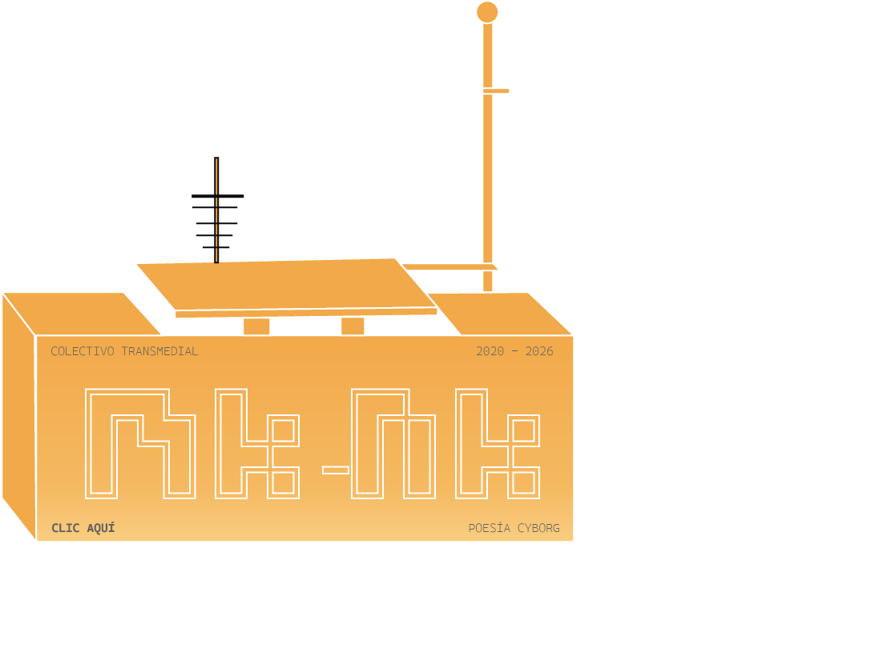

pensar el presente donde la experiencia es una forma de habitar lo digital, donde la libertad convive con estructuras profundas de control. circuitos cerrados de vigilancia —materializados en millones de cámaras y sistemas de registro— configuran una presencia constante que redefine la relación con la intimidad, desplazando la privacidad hacia una condición cada vez más difusa. dinámicas algorítmicas que ordenan y jerarquizan lo que circula. De ahí emerge una sensación de repetición y encierro como reflejo de sistemas que operan de forma invisible pero determinante.
